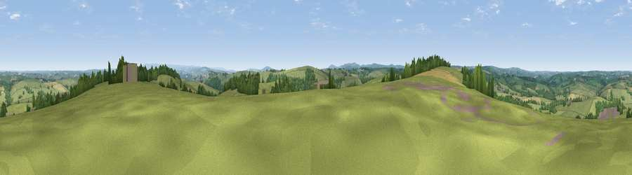

Viewpoint near Tregadillet
#16857 in England · top 30% of its area beats it · near Tregadillet · path 227 mWhere it is
The exact computed spot (SX 29775 86175). Click the marker for map links.
Public access: the nearest public right of way is about 227 m away — the final stretch may cross private land. Computed from Natural England's CRoW access layer and OpenStreetMap rights of way — not the legal definitive map. Always verify locally.
The view, rendered

A 360° render of this exact spot computed from the terrain model, tree cover and land cover — summer colours, afternoon light, calibrated against photographs of famous viewpoints. Real trees, hedges and buildings will differ in detail.
The panorama
Grey silhouette: terrain skyline in each direction (720 bearings, Earth curvature and refraction included). Dashed green: skyline with trees (+15 m) and buildings (+8 m) as obstacles. Blue strip: how far the ground is visible on each bearing.
Where the view opens
Wedge length = distance to the farthest visible ground on that bearing (vegetation-aware). Rings at 10, 25 and 50 km.
What fills the view
75% grassland · 16% woodland · 8% cropland · 1% built-up
Angular shares of the visible panorama (visual magnitude), not map area. Landscape diversity 0.33 (0–1 Shannon).
Key numbers
More beautiful places nearby
The staircase of upgrades: each row has a higher view potential than everything closer. Driving times are estimates from straight-line distance, calibrated against real road routing — check an actual route before setting out.
| Place | Direction | Drive | Score |
|---|---|---|---|
| Viewpoint near Egloskerry | WSW · 1 km | ~2 min | 57.3 |
| Viewpoint near Tregeare | W · 5 km | ~11 min | 59.9 |
| Larrick Hill | SSE · 8 km | ~16 min | 60.1 |
| Viewpoint near North Hill | SSW · 10 km | ~19 min | 68.6 |
| Viewpoint near Warbstow | WNW · 11 km | ~20 min | 71.2 |
| Viewpoint near Henwood | SSW · 12 km | ~23 min | 76.2 |
| Viewpoint near Henwood | SSW · 14 km | ~26 min | 77.3 |
| Caradon Hill | S · 16 km | ~28 min | 78.5 |
50.65032, -4.40929 · source: screening · position refined by local search. Computed location — check access rights before visiting.